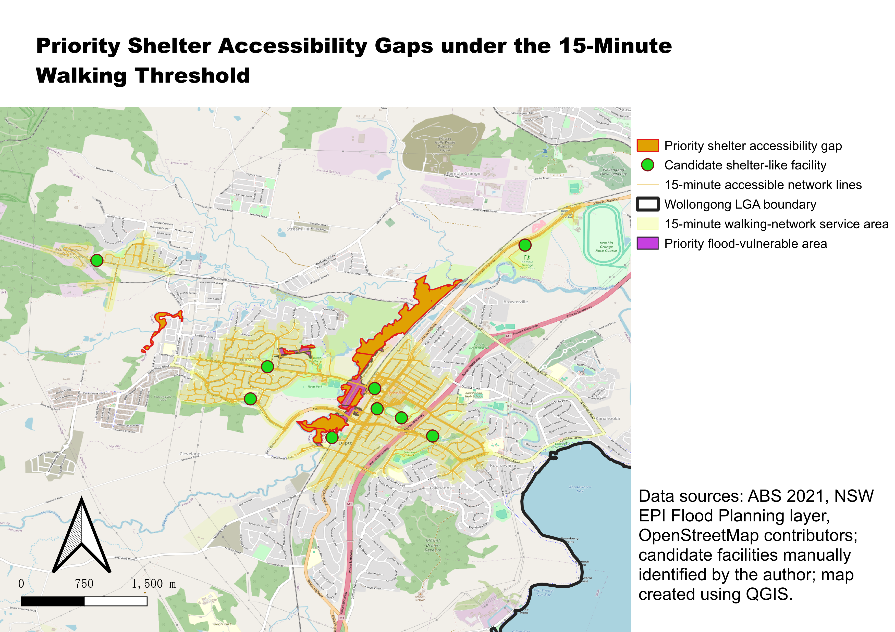
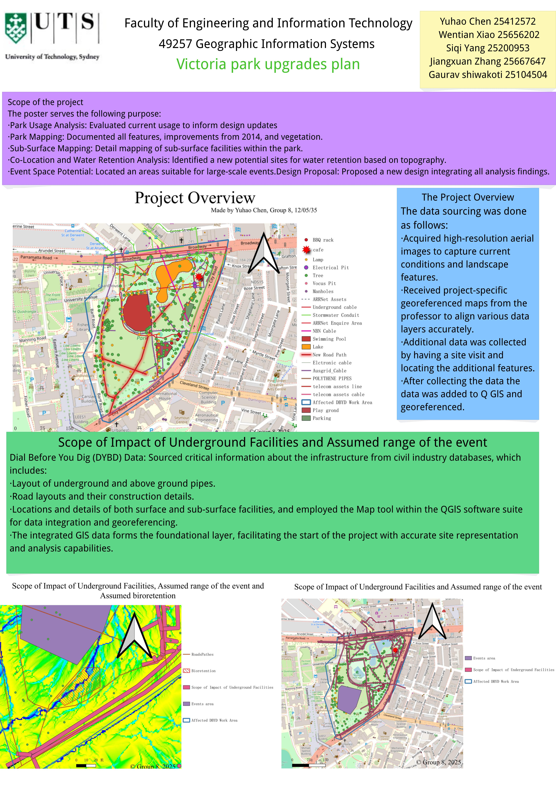
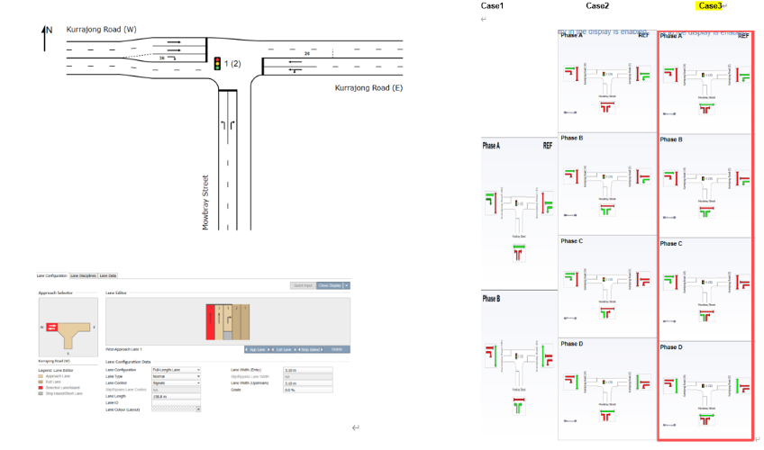
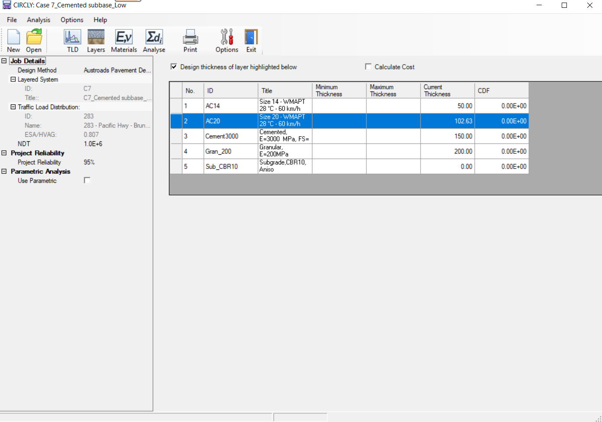
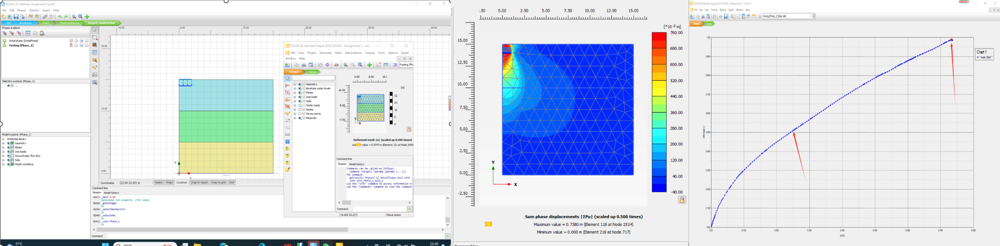

Hi, I'm Wentian (Sean) Xiao
Traffic Engineering & Geotechnical Engineering
I am a Master of Engineering student at the University of Technology Sydney, developing my career towards traffic engineering and geotechnical engineering. My interests include transport planning, road and pavement engineering, applied geotechnics, GIS-based analysis, and infrastructure projects.
Resume
Education
Master of Engineering (Extension)
University of Technology Sydney
Major in Geotechnical Engineering
Currently WAM : 88.73
Master of Civil Engineering and Environmental Science
University of Liverpool
Graduated with Merit
Bachelor of Geotechnical and Underground Construction Engineering
Chongqing Jiaotong University
Final Project: The Structural Design of Wenchangge Tunnel
Work Experience
Office Intern
Tramix Pty Ltd.
Assisted with quantity take-offs, engineering drawing review, and CAD-based drawing interpretation for Sydney-based projects.
Designing Project Manager
Guangju Lianfeng Architecture Design (Chongqing) Co., Ltd.
Supported design process management, project coordination, technical documentation, BIM-related work, and communication with designers, developers, construction managers and government stakeholders.
Structural Designer / Structural Designer Intern
Chongqing Hemei Architecture and Planning Design Co., Ltd.
Prepared structural drawings, technical documentation and project specifications, and supported design reviews, construction changes and on-site technical services.
Academic Projects
GIS-Based Shelter Accessibility Gap Assessment
Developed a GIS-based screening assessment of shelter accessibility gaps in Wollongong by integrating flood planning exposure, social vulnerability, candidate shelter-like facilities and walking-network accessibility.
GIS-Based Redevelopment of Victoria Park
Used QGIS and QField in a group project to support site selection for event space and bioretention areas through buffer analysis, slope analysis and spatial exclusion methods.
SIDRA Road Intersection Design Assignment
Applied SIDRA in a traffic engineering assignment to support road intersection design and evaluate traffic performance.
CIRCLY-Based Flexible Pavement Design Project
Used CIRCLY to compare flexible pavement structures under different traffic levels and interpret pavement thickness, critical response and governing distress mechanisms.
PLAXIS 2D Foundation Bearing Capacity and Settlement Project
Used PLAXIS 2D to model footing behaviour under loading and assess bearing capacity, settlement response, deformed mesh and displacement results.
Community & Leadership Experience
UTS FEIT Representative
International Strategic Management Workshop, Poznan University of Technology
Participated in an international workshop focused on strategic management, teamwork, and cross-cultural communication.
Volunteer
NSW International Student Volunteer Program
Supported volunteering activities and community engagement initiatives for international students and the wider community in NSW.
City of Sydney New Year's Eve Volunteer
Large-scale public event support
Supported event operations and crowd guidance during a major public event in Sydney.
UTS BUILD Program and UTS SOUL Award
Global leadership and community engagement
Developed communication, leadership, and community engagement skills through university-supported programs.
Selected Coursework Projects

GIS-Based Shelter Accessibility Assessment
A capstone GIS project assessing shelter accessibility gaps in Wollongong by integrating flood planning exposure, social vulnerability and walking-network accessibility.

GIS-Based Redevelopment of Victoria Park
A group GIS project using QGIS and QField for site selection, buffer analysis, slope analysis and spatial exclusion analysis.

SIDRA Road Intersection Design
A traffic engineering assignment using SIDRA to support road intersection design and evaluate traffic performance.

CIRCLY-Based Pavement Design
A pavement design project comparing flexible pavement structures under different traffic levels using CIRCLY-based mechanistic analysis.

PLAXIS 2D Foundation Modelling
A geotechnical modelling project using PLAXIS 2D to evaluate footing bearing capacity, settlement and deformation behaviour.
Additional Experience & Engagement
International Workshop
UTS FEIT Representative
Participated in the International Strategic Management Workshop at Poznan University of Technology, developing teamwork, communication and strategic thinking skills.
Volunteering
NSW International Student Volunteer Program
Ongoing volunteer experience from November 2025, supporting community engagement and international student-related activities.
Public Event Support
City of Sydney New Year's Eve Volunteer
Supported large-scale public event operations and crowd guidance during Sydney New Year's Eve.
Leadership Development
UTS BUILD Program and UTS SOUL Award
Developed global leadership, communication and community engagement skills through university-supported programs.
Traffic Engineering Direction
Transport and Road Infrastructure
Building technical interest in traffic engineering, transport planning, road engineering and pavement design.
Geotechnical Direction
Ground and Infrastructure Assessment
Continuing to develop knowledge in applied geotechnics, site investigation, PLAXIS 2D modelling and GIS-based spatial analysis.